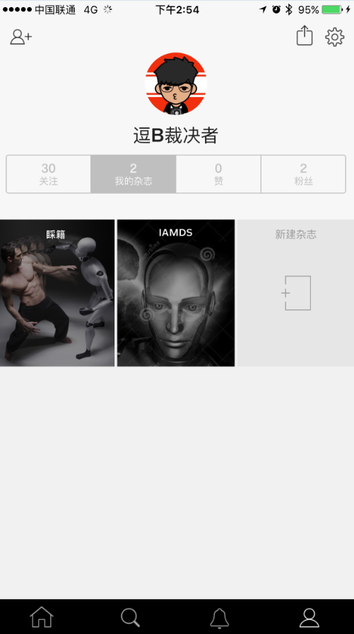
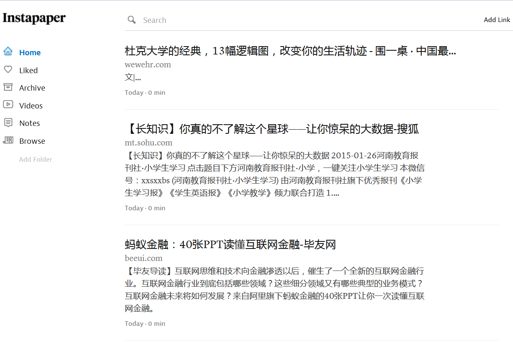
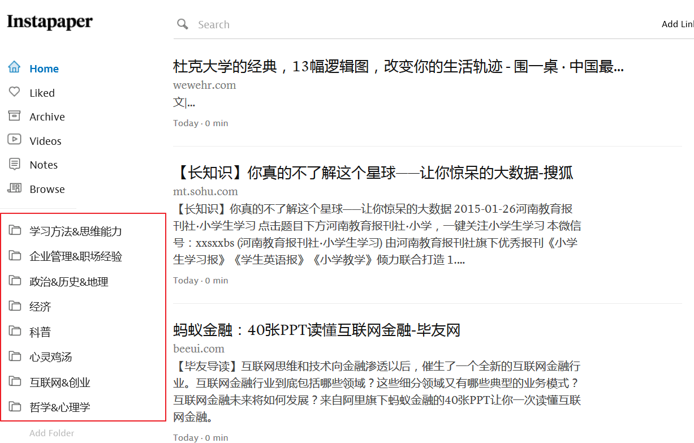
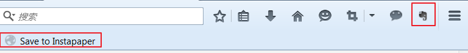
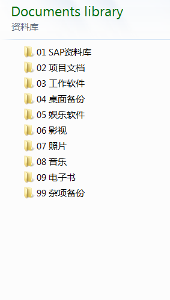

对于每个人来说，对自己有用的信息其实就可以被称作为知识，而知识就应该被收集和管理起来。
本文目录
-引子
本来只是打算浅谈一下如何利用沉淀法从每天接触到的海量信息中获得有用的内容转换为自己的知识，但是在做准备的时候发现自己的认识还真当是太浅薄了。我一般在写文章之前都喜欢做一点前期准备，主要是通过搜索引擎查找一下资料，然后选取一些值得借鉴的地方整合到我的文章里面。而这一次在看了一些牛人的知识获取和知识管理的方法之后，发现自己的这一点小伎俩简直不值一提。所以这一篇打算原本作为教程的文章现在我把它当作学习笔记来记录吧。
-什么算是知识
对于每个人来说，对自己有用的信息其实就可以被称作为知识，而知识就应该被收集和管理起来。可是我们所处的是一个信息大爆炸时代，每天都有无数的信息产生，而普通的我们每天也能接触到异常丰富的信息，并且经常的会有这样的感觉就是看了这篇文章觉得好有用，看了那篇文章又觉得好有启发，然后一古脑儿全部都记录收集下来，不幸的是过了一段时间回头看看自己并没有因为收集整理了这些知识而得到应有的提高。这也是我所面临的一个问题。现在我意识到光是收集和整理零散的知识并不是目的，最终的目的是让自己能更好的进步，让自己真正的理解，消化并吸引这些有用的知识。在互联网时代，知识的深度的确比广度要重要许多。
清楚了目的之后，我们就能够接下来看看如何才能实现这样的目的。首先要做的还是从海量的信息中筛选出知识。要是把每天获取知识比作吃饭的话，首先要做的就是要有选择的合理摄入一日三餐。在这里就要引用知乎-李石的一篇回答了，他是这样筛选出每天需要进补的知识的:
* 把对职业生涯有帮助的分为一类，出于好奇的分为一类。严格控制时间的分配，尽量减少好奇心阅读。
* 在有帮助的中间把来源靠谱的分为一类，来源不明的分为一类。显然靠谱品牌渠道，筛选成本更低。
* 在来源靠谱的中间把切实可行的分为一类，高端大气的分为一类。可能性再美也没有可行性重要。
* 在切实可行的中间把近期会用的分为一类，暂时不用的分为一类。未来远着呢，到时候怎么样谁知道。从长期来看，我们都会死。
* 在近期会用的中间，找到看完明天就能把活干的更好的。
* 从看完明天就能把活干的，就是知识，其他都是信息。
我每天的信息来源主要用的是Flipboard，它有创建个人杂志的功能。我有”睬籍”和”IAMDS”两个杂志，其实就是两个收藏夹。”睬籍”顾名思义就是采集的意思，每当看到有兴趣的文章我都会先保存到这里，而在”IAMDS”里则会保存一些和数据科学相关的文章。这和上面信息筛选的第一步有一点相像。然后对于一些精读过的文章要是觉得挺靠谱的我会把它保存到Instapaper里，因为Instapaper的文章不需要网络也可以阅读。然后问题就来了，现在”睬籍”里有很多文章都不知道什么时候采下来的，”IAMDS”里长篇大论没有看完的文章又有好一些，Instapaper里的内容多、杂且没有分类。


所以接下来我考虑把我的知识沉淀路径做一下升级，而所谓知识沉淀的路径正好就是知识收集的过程，我们正好进入下一话题知识如何收集。
-知识如何收集
在进行知识收集之前，我们先做一件事情就是知识分类，因为我们要先确定将知识收集到哪里去。而要是说到知识怎么分类，这个就见仁见智了，大家各自专注和关注的领域不同自然也会对自己的知识进行不一样的分类。我平时用的知识管理工具除了上面提到的Instapaper外还有就是印象笔记，在这里就把我的分类贴出来看看吧：

Instapaper的分类是刚刚做的，前面也提到我在Instapaper里没有做过分类，所以之后我要将文章做进一步的筛选并保存到对应的分类里去。

印象笔记里面记录的内容相对Instapaper要更专业一些，主要是涉及平时工作中会用到的专业知识，因为印象笔记的全文搜索很好用，而Instapaper的全文搜索是需要收费的。所以不论你选择什么软件管理你的知识，相信知识分类都是一个很好的开始。
我之所以喜欢用这两个工具是因为浏览器都已经很好的集成了将网页保存进Instapaper和印象笔记的插件，看到有兴趣的文章只需要点击相应的插件就可以将内容保存下来了：
所以到这里我们就可以整理一下知识收集的步骤了：
* 选择一两款适合自己的软件用来集成管理知识 - 比如Instapaper和印象笔记
* 将自己知识进行合理的分类 - 建议设置一个缓冲分类用来存放待读内容
* 采集网络信息到本地软件的"待读"区 - 比如Instapaper的Home就可以
* 运用筛选法将信息沉淀到对应的知识分类区里
-知识库如何管理
随着时间的流逝，日积月累，你会发现你的软件里存放的文章也越来越丰富，一些零散的知识点终于变成了一个看起来有点庞大的知识库了，那么这个时候就又要考虑一下如何来管理库里面的这些知识了。这里我要介绍的两点是回顾和归档。
所谓回顾，就是可以隔一段时间回头来看一看那些自己往日收集下来的文章，温故而知新，有很多时候都会得到新的启发。在回顾的同时，又可以对知识库里的内容做一个重新的梳理和整理，看一看知识的分类是不是需要调整，有些文章是不是已经没有保留的必要等。
比回顾更重要的是知识库的归档，要是没有做好归档的话有可能自己辛辛苦苦收集的内容会由于电脑崩溃、硬盘坏死等突发原因而付诸一炬。幸好现在我们有云备份技术，所以要是你所使用的软件支持云备份的就请千万记得定时备份，或者干脆把自动备份打开。上面提到的Instapaper和印象笔记都支持云端保存的，这也是我喜欢这两个工具的原因之一。
然而我们的知识库里还有一部分的知识并不一定是通过某些网页获取的，它们可能是一篇pdf文章或者是一本电子书，当然现在的印象笔记也支持将pdf保存成笔记并同步到云端，但是我还是建议大家平时将自己电脑里存放的重要内容定时做个归档和备份。我个人一般是做两套备份，一套是保存到移动硬盘里面，另一套是同步到云端，现在的一些云存储都提供了比较大的存放空间，比如百度云。下图就是一个我最常用的归档分类，基本上能够涵盖我个人电脑里所有的内容了:

-结尾
看标题像是一个教程文档，实际上写完之后发现自己需要改进的地方还有很多。特别是对于收集下来的知识的处理方面，有很多的内容当时觉得很有用保存下来之后事后就又忘记去阅读了，接下来的时间我也要好好的回顾和梳理一下自己的知识库，把一些重要的优先级高的知识挑选出来，把那些因为好奇的或看似高大上而保存的内容先放一放，给大脑多腾些空间来学习和接受那些切实可行的知识。